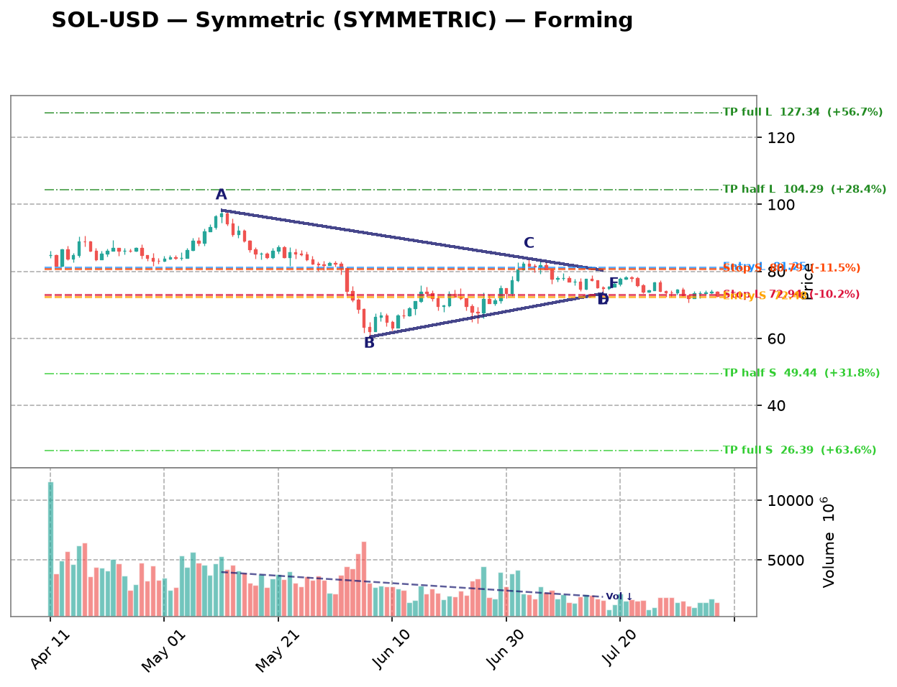
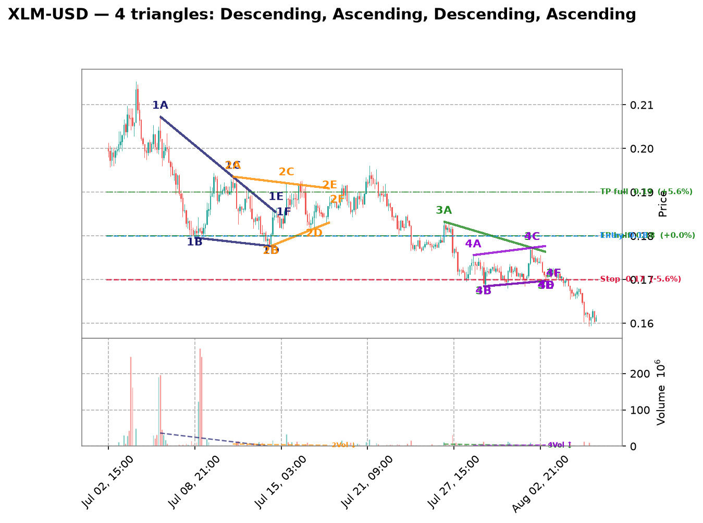
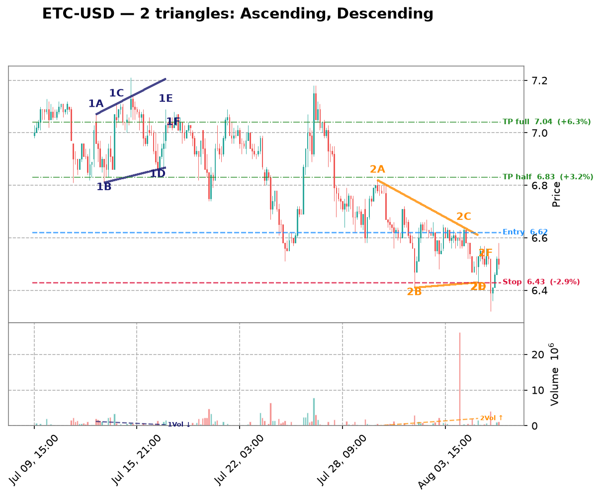
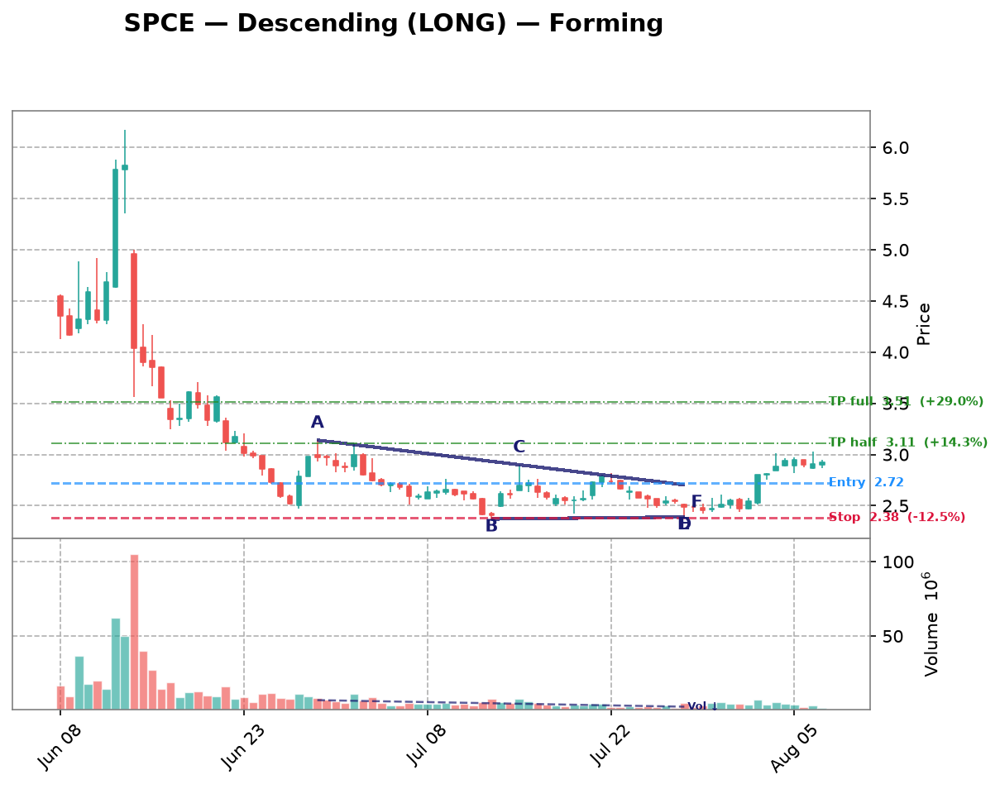
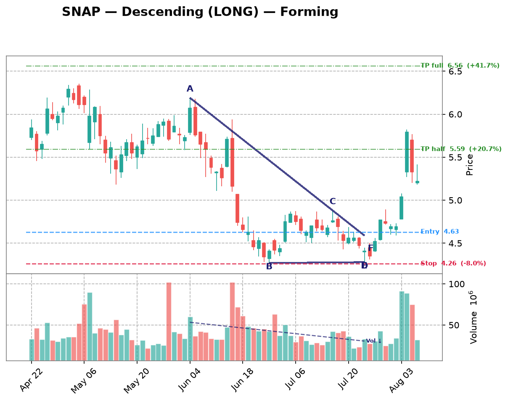

| Date | Symbol | TF | Pattern | Dir | Verdict | Claude Pattern | Claude Dir | Conf | Rec |
|---|---|---|---|---|---|---|---|---|---|
| crypto 10 patterns | |||||||||
| 2026-08-10 | DOGE-USD | 1d | Descending | LONG | Disputed | ? | ? | Certainty: 82 | — |
Chart  Claude Notes The right edge of the chart (late June through early August) shows price flattening around 0.068-0.075 after a steep downtrend, but this looks like a basing/consolidation range rather than a descending triangle. There's no clear descending upper trendline with distinct lower highs converging into a flat support - instead price action is largely flat/sideways with overlapping candles in a tight horizontal band. No visible compression or apex forming. The algorithm likely mistook the flattening after a downtrend for a descending triangle, but there are not two clearly distinct converging trendlines with multiple touch points on each side. Presence certainty 82/100 — how sure Claude is that its found/not-found call is correct | |||||||||
| 2026-08-10 | VET-USD | 1d | Descending | LONG | Disputed | ? | ? | Certainty: 78 | — |
Chart  Claude Notes The right side of the chart (late June through August) shows price consolidating in a tight, flat range roughly between 0.0045 and 0.0050 with no clear convergence — both highs and lows are essentially flat, not narrowing. This looks more like a flat/rectangular consolidation than a descending triangle, which requires a distinctly falling upper trendline (lower highs) against a flat support. Prior to that, from May to late June there was a strong, steady downtrend with lower highs and lower lows, but that's a clean downtrend/channel, not a converging triangle - the lows are not flattening out over that stretch. The algorithm likely mistook the flat post-decline consolidation for a triangle, but there's insufficient evidence of a sloped resistance line converging toward a flat support with 2+ credible touches each. Overall the recent price action lacks the compression/apex structure needed for a valid descending triangle. Presence certainty 78/100 — how sure Claude is that its found/not-found call is correct | |||||||||
| 2026-08-10 | XRP-USD | 1d | Descending | LONG | Disputed | ? | ? | Certainty: 78 | — |
Chart  Claude Notes The right side of the chart (roughly June through August) shows price trading in a fairly tight, flat range between about 1.02 and 1.20, but this looks more like a sideways consolidation/rectangle than a converging triangle. Highs are not making a clear series of lower highs - they bounce around 1.10-1.20 somewhat randomly - and the lows are also roughly flat rather than rising or falling in a consistent trendline. There isn't a clean two-line convergence toward an apex; instead price is just oscillating in a horizontal band with declining volume. The algorithm's 'descending triangle' call would require a clearly falling upper resistance line, which isn't evident here - the recent highs (mid-June, early-July, late-July) are roughly similar in level rather than descending. This looks more like consolidation/basing after a downtrend than an active triangle breakout setup, so I disagree with the algorithmic flag. Presence certainty 78/100 — how sure Claude is that its found/not-found call is correct | |||||||||
| 2026-08-10 | ETH-USD | 1d | Symmetric | SYMMETRIC | Disputed | ? | ? | Certainty: 72 | — |
Chart  Claude Notes The right side of the chart (mid-July to end) shows price oscillating in a tight, roughly flat horizontal range between ~1830 and ~1950 with no clear convergence - both the highs and lows are essentially flat, not narrowing toward an apex. This looks more like a consolidation/rectangle after the sharp Jun-Jul recovery rally than a true converging triangle. There's no discernible rising lower trendline or falling upper trendline that would create a wedge shape; the candles are bouncing within a fairly constant band. The algorithm likely mistook this sideways chop for symmetric convergence, but the range width isn't visibly shrinking over the last ~15-20 candles. I don't see enough evidence of genuine narrowing to call this a credible triangle setup. Presence certainty 72/100 — how sure Claude is that its found/not-found call is correct | |||||||||
| 2026-08-10 | SOL-USD | 1d | Symmetric | SYMMETRIC | Both agree | Symmetric | SYMMETRIC | Quality: 45 | — |
Chart  Claude Notes {
"found_triangle": true,
"pattern_type": "Symmetric",
"direction": "SYMMETRIC",
"presence_confidence": 55,
"pattern_quality": 45,
"notes": "From mid-July onward price has compressed into a range roughly 71- Presence certainty 55/100 — how sure Claude is that its found/not-found call is correct Pattern quality 45/100 — how clean/tradable this specific triangle is | |||||||||
| 2026-08-10 | MANA-USD | 4h | Ascending | SHORT | Disputed | ? | ? | Certainty: 78 | — |
Chart  Claude Notes The right side of the chart shows a flat, tight consolidation band between ~0.0655 and 0.0685 with no clear rising lower trendline or converging apex — it looks more like a rectangle/sideways channel than an ascending triangle. Lows around Jul 24-Aug 5 are roughly flat, not stepping upward, and highs are also flat rather than converging toward the lows. There's no clear apex forming near the right edge. The algorithm's ascending triangle call isn't well supported since both boundaries appear horizontal/parallel rather than converging with a rising support line. I don't see enough evidence of genuine convergence to call this a valid triangle. Presence certainty 78/100 — how sure Claude is that its found/not-found call is correct | |||||||||
| 2026-08-10 | SAND-USD | 4h | Descending | LONG | Disputed | ? | ? | Certainty: 72 | — |
Chart Claude Notes The chart shows a persistent downtrend from early July (~0.052) into late July (~0.041), followed by a choppy, range-bound consolidation from Jul 28 through Aug 6 between roughly 0.041 and 0.044. This recent price action looks more like a flat, sideways rectangle/range than a converging triangle - the highs are not clearly declining (they bounce between 0.042-0.0435 repeatedly without a consistent lower-high sequence), and the lows are also fairly flat around 0.0405-0.0415 rather than rising. There's no clear apex or convergence point forming. The algorithm's descending triangle flag may be picking up on the earlier downtrend's lower highs, but the flat support/resistance near the right edge looks more like consolidation/basing than an active triangle with 2+ credible touches on both converging sides. I don't see a well-defined narrowing wedge shape near the right edge. Presence certainty 72/100 — how sure Claude is that its found/not-found call is correct | |||||||||
| 2026-08-10 | XLM-USD | 3h | Descending | LONG | Disputed | ? | ? | Certainty: 85 | — |
Chart  Claude Notes The chart shows a clear, sustained downtrend since early July with a series of lower highs and lower lows in a staircase pattern, not a converging triangle. Near the right edge, price is making a fresh leg down (0.175 to 0.16) without any flattening lower support or evidence of compression - both boundaries would be sloping downward in parallel-ish fashion rather than converging into an apex. There's no rising support line (lows keep falling: ~0.18, ~0.175, ~0.17, ~0.16), which contradicts the ascending triangle label. The algorithm likely misread the minor consolidation bumps (e.g., around Jul 21-27) as a triangle, but the right-edge price action is simply continuing the downtrend with no clear symmetric or ascending convergence pattern forming. Presence certainty 85/100 — how sure Claude is that its found/not-found call is correct | |||||||||
| 2026-08-10 | VET-USD | 3h | Ascending | SHORT | Disputed | ? | ? | Certainty: 78 | — |
Chart  Claude Notes The right side of the chart shows a choppy, range-bound consolidation between roughly 0.00465 and 0.00475, but there's no clear convergence between an ascending support line and a flat/descending resistance line. Lows since Aug 3 are relatively flat (around 0.0046-0.00465) rather than rising, and highs are also flat-to-declining, more resembling a horizontal range/rectangle than a converging triangle. I don't see a credible rising trendline connecting at least two-three higher lows that would meet a flat resistance near an apex. The algorithm's 'ascending triangle' flag seems to be picking up on minor higher-low noise rather than a genuine structural pattern. Overall this looks like sideways consolidation after a downtrend, not a well-defined triangle. Presence certainty 78/100 — how sure Claude is that its found/not-found call is correct | |||||||||
| 2026-08-10 | ETC-USD | 3h | Descending | LONG | Disputed | ? | ? | Certainty: 78 | — |
Chart  Claude Notes The right side of the chart shows a persistent downtrend with lower highs and lower lows, not a converging triangle. From late July onward price steadily declines from ~7.15 to ~6.4-6.5 with no clear flat support line - lows keep dropping (6.8, 6.6, 6.4). There's a brief consolidation around 6.5-6.6 near the very right edge, but it's too short (only a handful of candles) to confirm two clean touches on both a flat support and a converging resistance. This looks more like a continuation of a downtrend with minor consolidation than an established descending triangle with multiple respected touch points. I disagree with the algorithm's flag - the structure lacks the clear flat-bottom support required for a descending triangle. Presence certainty 78/100 — how sure Claude is that its found/not-found call is correct | |||||||||
| crypto-equity 5 patterns | |||||||||
| 2026-08-10 | MSTR | 3h | Descending | LONG | Disputed | ? | ? | Certainty: 72 | — |
Chart  Claude Notes After the sharp decline into late June, price has been oscillating sideways in a broad range roughly between 90-104 without clear convergence. Highs and lows are choppy - not consistently declining highs or flat lows. The right edge shows small-range consolidation around 95-98, but there's no clean descending resistance line with 3+ lower highs, nor a flat support line; both boundaries look mostly flat/noisy rather than converging. This looks more like range-bound consolidation than a descending triangle. I disagree with the algorithm's flag - the touch points don't align well enough to draw a credible descending trendline, and the lower boundary isn't flat either (it dips to ~90-92 multiple times inconsistently). Presence certainty 72/100 — how sure Claude is that its found/not-found call is correct | |||||||||
| 2026-08-09 | MSTR | 1h | Ascending | SHORT | Disputed | ? | ? | Certainty: 78 | — |
Chart  Claude Notes The right-side price action (late Aug 5 into Aug 6) shows a decline from ~99 to ~96.5 with lower highs and lower lows together — this looks like a mild downtrend/pullback rather than a converging triangle with a rising support line. There's no clear rising trendline of higher lows; instead both highs and lows are declining in tandem, more consistent with a small descending channel or simple retracement than an ascending triangle. No flat resistance line is visible either (highs are dropping from ~99 to ~97.5 to ~97). I don't see the two clearly converging trendlines required for a valid triangle at the right edge, so I disagree with the algorithm's ascending triangle / short flag. Presence certainty 78/100 — how sure Claude is that its found/not-found call is correct | |||||||||
| 2026-08-09 | CIFR | 1h | Descending | LONG | Disputed | ? | ? | Certainty: 78 | — |
Chart  Claude Notes The chart shows a series of large swing oscillations (roughly 26->18->24->17->26->18->25->18) rather than a converging structure. Each swing has similar amplitude, indicating a broad trading range/downtrend with volatility rather than a narrowing triangle. Near the right edge, price is declining from ~25 to ~18-19 with no flattening support line or clear lower highs converging into an apex - the recent candles show a steady downward slide, not compression. There is no consistent horizontal support with descending highs; the swings are too wide and repetitive to qualify as a descending triangle. I disagree with the algorithm's flag - this looks like continued range-bound/down-trending price action, not a triangle nearing apex. Presence certainty 78/100 — how sure Claude is that its found/not-found call is correct | |||||||||
| 2026-08-09 | MARA | 1h | Descending | LONG | Disputed | ? | ? | Certainty: 78 | — |
Chart  Claude Notes {
"found_triangle": false,
"pattern_type": null,
"direction": null,
"presence_confidence": 78,
"pattern_quality": null,
"notes": "The chart shows an overall downtrend with successive lower highs (15, 14, 13, 12.7, 12) and lower lows (12, 11.8, 10.7, 10, 10.7), forming a descending staircase rather than a converging triangle. There's no flat/horizontal support line - the lows are also declining, not holding at a consistent level. At the right edge, price is consolidating in a tight range around 10.7-12 but without clear evidence of a rising lower boundary or flat lower support meeting a descending upper trendline with 3+ touches each. This looks more like a broader downtrend with intermittent consolidation than a well-defined descending triangle. The algorithm's flag is plausible given the recent narrowing range, but the lower boundary isn't flat - it's still sloping down, making this more consistent with a bearish channel/flag than a classic descending triangle setup for a LONG bias, which would typically need a firm horizontal support.",
} Presence certainty 78/100 — how sure Claude is that its found/not-found call is correct | |||||||||
| 2026-08-09 | IREN | 1h | Symmetric | SYMMETRIC | Disputed | ? | ? | Certainty: 72 | — |
Chart  Claude Notes The chart shows a broad downtrend from late June (~57) into a choppy bottoming/ranging structure from mid-July through early August, oscillating between roughly 30 and 44 with multiple swing highs and lows of similar magnitude - more like a wide horizontal range than a converging wedge. Near the right edge (early August), price is bouncing between ~37-41 without clear narrowing of highs and lows; recent candles show similar range width to prior weeks rather than compression toward an apex. I don't see two clearly converging trendlines with consistent touch points - the swing highs (44, 43, 41) and lows (33, 30, 36) don't form a tight symmetric convergence, they look more like a rounded/ranging base. I disagree with the algorithmic flag; this looks more like consolidation/basing after a downtrend rather than a well-defined symmetric triangle. Presence certainty 72/100 — how sure Claude is that its found/not-found call is correct | |||||||||
| mega-cap 4 patterns | |||||||||
| 2026-08-10 | AMZN | 1d | Descending | LONG | Disputed | ? | ? | Certainty: 82 | — |
Chart  Claude Notes The right side of the chart shows a sharp rally from ~230 to ~287 followed by a pullback of only 3-4 candles (280→272). This is far too brief and too steep to constitute a triangle - there's no flat support line or descending resistance with multiple touch points. It looks like a strong impulsive breakout followed by a minor retracement/consolidation, not a converging pattern. The broader chart shows a large rounded W/V shape (decline from Apr-Jun lows around 227, then recovery), but no clear converging trendlines are visible near the right edge. The algorithm's descending triangle call doesn't hold up - there are only 2-3 candles of pullback, insufficient for establishing a resistance line with lower highs, and no evidence of a flat support base being tested multiple times. Presence certainty 82/100 — how sure Claude is that its found/not-found call is correct | |||||||||
| 2026-08-10 | NVDA | 1d | Descending | LONG | Disputed | ? | ? | Certainty: 75 | — |
Chart  Claude Notes The chart shows a broad downtrend from mid-May highs (~236) into late July lows (~190), followed by a sharp V-shaped recovery in the final few candles up to ~223. This is not a converging triangle - there's no clear flat support with descending resistance forming a narrowing wedge. The recent price action is a strong impulsive rally off the lows, not a compression pattern. The algorithm's 'descending triangle' call doesn't hold up: there's no flat horizontal support being tested multiple times, and the upper boundary isn't cleanly stepping down in a series of lower highs converging toward a support line. Instead we see a large swing low near 190 and a vertical bounce, which looks more like a reversal/breakout move than a triangle apex. Not enough touch points on either side near the right edge to confirm containment. Presence certainty 75/100 — how sure Claude is that its found/not-found call is correct | |||||||||
| 2026-08-10 | META | 1d | Descending | LONG | Disputed | ? | ? | Certainty: 72 | — |
Chart  Claude Notes The right side of the chart shows a sharp decline in late July into early August (drop to ~525) followed by a bounce, then choppy consolidation around 585-600 with no clear convergence of highs and lows. There's no flat support line being tested multiple times, nor a clearly descending resistance line - the recent candles just show sideways chop after a volatile downswing. This looks more like consolidation/basing after a selloff rather than a defined descending triangle. I don't see at least two clean touches on both a flat lower boundary and a descending upper boundary converging toward an apex near the current price action. Presence certainty 72/100 — how sure Claude is that its found/not-found call is correct | |||||||||
| 2026-08-10 | GOOGL | 4h | Ascending | SHORT | Disputed | ? | ? | Certainty: 82 | — |
Chart  Claude Notes The right side of the chart shows a strong uptrend from ~320 to ~382 followed by a sharp pullback to ~358-365, not a converging triangle. There's no clear flat resistance being tested multiple times, nor a well-defined rising support line with multiple touches - the recent price action is a single sharp spike up (Aug 1-4) followed by a retracement, which is more consistent with a blow-off top/reversal than an ascending triangle. The algorithm likely mistook the general uptrend structure for a triangle, but there aren't at least two clean touches on a flat upper resistance line - each 'high' near 370-382 is progressively higher, not flat, which contradicts the ascending triangle definition (flat top, rising bottom). This looks more like an impulsive rally that just topped out, not a compression pattern. Presence certainty 82/100 — how sure Claude is that its found/not-found call is correct | |||||||||
| semiconductors 3 patterns | |||||||||
| 2026-08-10 | ADI | 4h | Descending | LONG | Not reviewed | ? | ? | — | — |
Chart  | |||||||||
| 2026-08-09 | LRCX | 1h | Ascending | SHORT | Disputed | ? | ? | Certainty: 72 | — |
Chart  Claude Notes The right-side price action (early Aug) shows a choppy range between roughly 305-320, but there's no clear ascending support line—lows are flat/noisy (around 305-308) rather than making distinct higher lows, and the highs are also roughly flat (~315-320) rather than converging. This looks more like a horizontal consolidation/rectangle than a true ascending triangle. The algorithm likely flagged minor higher-low bumps, but there aren't 2-3 clean touch points forming a rising trendline distinct from a flat one. Prior to this, price action from mid-July was a clear downtrend with lower highs/lower lows, not a triangle. Given the ambiguity of the recent consolidation, I lean toward rejecting the triangle call, though a loose case for a shallow ascending structure isn't impossible. Presence certainty 72/100 — how sure Claude is that its found/not-found call is correct | |||||||||
| 2026-08-09 | AMAT | 1h | Symmetric | SYMMETRIC | Disputed | ? | ? | Certainty: 72 | — |
Chart  Claude Notes The right side of the chart shows a rally from ~500 to ~555 followed by a pullback to ~530, but this looks like a rounded top / pullback within a broader swing rather than a converging triangle. There's no clear sequence of lower highs meeting higher lows - the recent candles (Aug 03-08) show a peak around 555 then a fairly sharp drop to 530, which is more consistent with a short-term downtrend or consolidation than a symmetric wedge. I don't see at least two clean, roughly parallel converging trendlines with multiple touches on each side near the apex. The algorithm may be reacting to the general narrowing of range after the spike, but the touch points are too few and inconsistent to confirm a genuine symmetric triangle. Presence certainty 72/100 — how sure Claude is that its found/not-found call is correct | |||||||||
| forex 2 patterns | |||||||||
| 2026-08-09 | EURUSD=X | 1h | Ascending | SHORT | Disputed | ? | ? | Certainty: 82 | — |
Chart  Claude Notes The right side of the chart shows a clear downtrend from the Aug 5 peak (~1.156) into Aug 6, with lower highs and lower lows in a fairly consistent decline, followed by a flattening/consolidation near 1.1525-1.153. There's no clear rising support line with higher lows to form an ascending triangle - instead price dropped sharply and is now consolidating in a narrow range without a defined converging structure. The algorithm's ascending triangle call doesn't fit since there's no series of higher lows visible; the recent price action looks more like a sharp decline stabilizing at a new lower level rather than a triangle compression. Not enough touch points on both an upper and lower trendline to confirm any triangle pattern near the apex on the right edge. Presence certainty 82/100 — how sure Claude is that its found/not-found call is correct | |||||||||
| 2026-08-09 | NZDUSD=X | 1h | Ascending | SHORT | Disputed | ? | ? | Certainty: 78 | — |
Chart  Claude Notes The right side of the chart shows price consolidating in a choppy range between ~0.5865 and ~0.590 after a strong impulsive rally from late July. However, this looks more like a flat/rectangular consolidation than an ascending triangle - the highs are roughly flat (~0.590) but the lows are also fairly flat/choppy (~0.5865-0.587), not showing a clear rising sequence of higher lows. There's no clean converging trendline structure - both boundaries appear roughly horizontal rather than one flat and one rising. This resembles sideways consolidation or a minor pullback/flag after the breakout rather than a textbook ascending triangle with rising support. The algorithm's flag seems to be picking up on the tightening range but the specific 'rising lower trendline' criterion for ascending triangle isn't clearly satisfied here. Presence certainty 78/100 — how sure Claude is that its found/not-found call is correct | |||||||||
| hardware 2 patterns | |||||||||
| 2026-08-10 | DELL | 1d | Ascending | SHORT | Disputed | ? | ? | Certainty: 75 | — |
Chart  Claude Notes The right side of the chart shows a broad trading range roughly between 370 and 465 from early June through early August, followed by a fresh push higher into early August with a large green candle to ~480 and pullback. There isn't a clear flat resistance with rising higher lows converging toward an apex - highs and lows both oscillate in a wide range-bound/choppy fashion rather than compressing. The last few candles show expansion (wide range up to 480 then down) rather than narrowing volatility, which argues against an active triangle apex. I don't see a consistent rising trendline of higher lows paired with a flat ceiling with 3+ clean touches each - it looks more like a horizontal consolidation range with recent breakout attempt rather than a converging ascending triangle. Presence certainty 75/100 — how sure Claude is that its found/not-found call is correct | |||||||||
| 2026-08-09 | STX | 1h | Descending | LONG | Disputed | ? | ? | Certainty: 72 | — |
Chart  Claude Notes The right-side price action (Aug 03–06) shows a choppy, roughly flat range between ~815 and ~890 with no clear convergence — highs and lows are similarly spaced throughout rather than narrowing toward an apex. There's a sharp downside wick near Aug 06 breaking below the recent range low (~780), which argues against a clean descending triangle setup (support was violated, not respected). I don't see a consistent flat support line with lower highs converging into it; instead it looks like sideways consolidation/noise with one outlier spike down. Not enough clean touch points on both a flat lower line and a descending upper line to call this a credible descending triangle. Presence certainty 72/100 — how sure Claude is that its found/not-found call is correct | |||||||||
| space 2 patterns | |||||||||
| 2026-08-10 | GSAT | 1d | Descending | LONG | Disputed | ? | ? | Certainty: 82 | — |
Chart  Claude Notes The chart shows a downtrend from late May through late July (lower highs and lower lows), followed by a sharp gap-up breakout around late July/early Aug that pushed price from ~80 to ~84-85. There's no clear flat support base or symmetric convergence forming near the right edge - the recent price action is a strong impulsive breakout candle followed by a few small consolidation candles, not a compressing triangle. There aren't at least two clean touches on both a flat/rising lower line and a descending upper line near the current price action - the move up was abrupt rather than a gradual narrowing. I disagree with the algorithm's descending triangle flag; the structure looks more like a downtrend that already resolved with a breakout gap, not a triangle still compressing toward an apex. Presence certainty 82/100 — how sure Claude is that its found/not-found call is correct | |||||||||
| 2026-08-10 | SPCE | 4h | Descending | LONG | Disputed | ? | ? | Certainty: 68 | — |
Chart  Claude Notes The chart shows a sharp spike-and-crash from early June, followed by a prolonged downtrend that flattens into a tight sideways consolidation from early July through early August, with a small recent uptick. There isn't a clear descending upper trendline with lower highs converging into a flat support - instead price has been trading in a fairly flat, narrow range (roughly 2.5-3.0) for weeks with similar highs and lows, more resembling a basing/consolidation rectangle than a converging triangle. The recent candles show a slight breakout to the upside (2.9-3.0 area) rather than compression toward an apex. I don't see well-defined converging trendlines with clear touch points on both sides near the right edge, so I disagree with the algorithm's descending triangle call - this looks more like range-bound consolidation with a mild upward bias at the end. Presence certainty 68/100 — how sure Claude is that its found/not-found call is correct | |||||||||
| adtech 1 pattern | |||||||||
| 2026-08-10 | U | 1d | Ascending | SHORT | Disputed | ? | ? | Certainty: 88 | — |
Chart  Claude Notes The right side of the chart shows a strong, near-vertical breakout rally from ~29 to over 40 with expanding volume, not a converging triangle. There's no flat/descending resistance line being tested repeatedly - price simply broke upward through prior consolidation (Jun-Jul range ~28-32) and is now in an uncontained uptrend. The algorithm's ascending triangle flag likely picked up the earlier consolidation (late Jun to late Jul) where price oscillated in a tight range with higher lows, but that pattern has already resolved with a strong breakout to the upside, not a short setup. There's no evidence of compression or a converging apex near the current price action - candles are large-bodied and expanding, indicating trend continuation rather than triangle consolidation. Presence certainty 88/100 — how sure Claude is that its found/not-found call is correct | |||||||||
| commodities 1 pattern | |||||||||
| 2026-08-10 | NEM | 4h | Descending | LONG | Disputed | ? | ? | Certainty: 78 | — |
Chart  Claude Notes The chart shows a clear downtrend from mid-June highs (~112) into a bottom around July 17-19 (~89-90), followed by a recovery uptrend into early August (~105). This is a V-shaped reversal, not a converging triangle. There's no clear descending resistance line with lower highs converging against a flat support - instead price made one broad decline then a broad rally. The right edge shows continued upward momentum with higher highs and higher lows (Aug 3-6), which contradicts a descending triangle setup entirely. The algorithm's flag appears to be a false positive, likely picking up on the general downtrend earlier in the chart without recognizing the subsequent strong reversal and lack of compression/convergence structure near the right edge. Presence certainty 78/100 — how sure Claude is that its found/not-found call is correct | |||||||||
| fintech 1 pattern | |||||||||
| 2026-08-10 | SOFI | 1d | Descending | LONG | Disputed | ? | ? | Certainty: 78 | — |
Chart  Claude Notes The right side of the chart shows a sharp drop to ~15 in late July followed by a strong V-shaped recovery back to ~18.5, not a converging triangle. There's no flat support line or descending resistance line with multiple touches - instead it's a rapid selloff and reversal (a spike low with high volume, then a large green candle recovery). Only one clear low touch point exists after the drop, and the recent candles (18-18.7 range) don't show compression or narrowing range typical of a triangle; they show continued upward momentum with normal-sized candles. The algorithm likely misread the pre-drop consolidation (June-July, roughly 17-19 range) as a descending triangle, but that structure already resolved via breakdown, not a triangle breakout, and is now well in the past relative to the current price action at the right edge. Presence certainty 78/100 — how sure Claude is that its found/not-found call is correct | |||||||||
| industrials 1 pattern | |||||||||
| 2026-08-09 | RCL | 1h | Ascending | SHORT | Disputed | ? | ? | Certainty: 80 | — |
Chart  Claude Notes The right side of the chart shows price oscillating in a fairly flat range between ~318 and ~330 after a strong impulsive rally from late July. There's no clear rising lower support line - the recent lows (~320-322) are roughly flat or even slightly declining, not making higher lows as required for an ascending triangle. The highs are also roughly flat (~328-330) rather than converging with the lows. This looks more like a consolidation/range or minor pullback after a strong uptrend rather than a converging triangle. I don't see two clear trendlines converging toward an apex - the pattern lacks the compression structure needed. Disagreeing with the algorithm's ascending triangle flag; the structure is closer to a flat consolidation/rectangle than a triangle with rising support. Presence certainty 80/100 — how sure Claude is that its found/not-found call is correct | |||||||||
| internet 1 pattern | |||||||||
| 2026-08-10 | SNAP | 1d | Descending | LONG | Disputed | ? | ? | Certainty: 82 | — |
Chart  Claude Notes The chart shows a broad downtrend from late April through mid-June (roughly 6.3 to 4.3), followed by a basing/consolidation period through July, and then a sharp breakout spike in early August with a large green candle on high volume, followed by pullback candles. There is no clear converging structure near the right edge - instead there's a distinct low-volatility consolidation range (~4.4-4.9) that abruptly breaks upward, not a gradual narrowing of highs and lows into an apex. The recent candles after the breakout show a mild retracement, not a re-compression into a triangle. This looks more like a base-and-breakout rather than a descending triangle in formation; the algorithm likely mistook the flat consolidation base for a descending triangle, but there's no clear series of lower highs converging with flat support - the range was fairly flat on both sides, and it already broke out decisively upward. Presence certainty 82/100 — how sure Claude is that its found/not-found call is correct | |||||||||